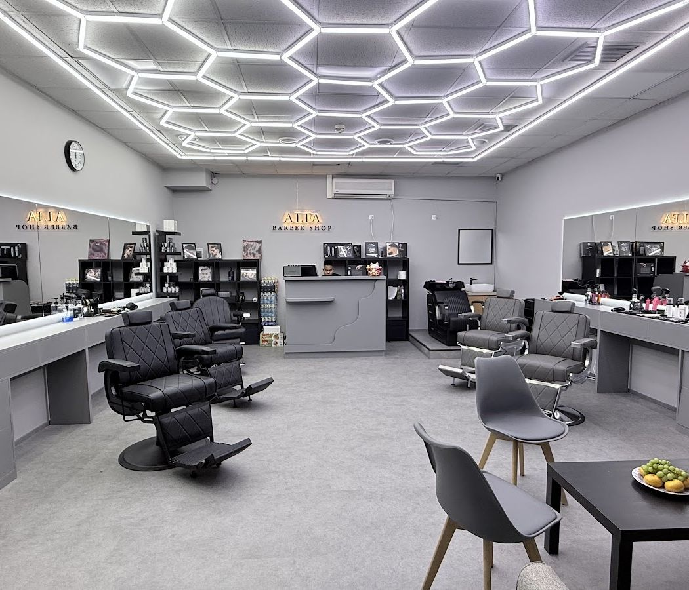
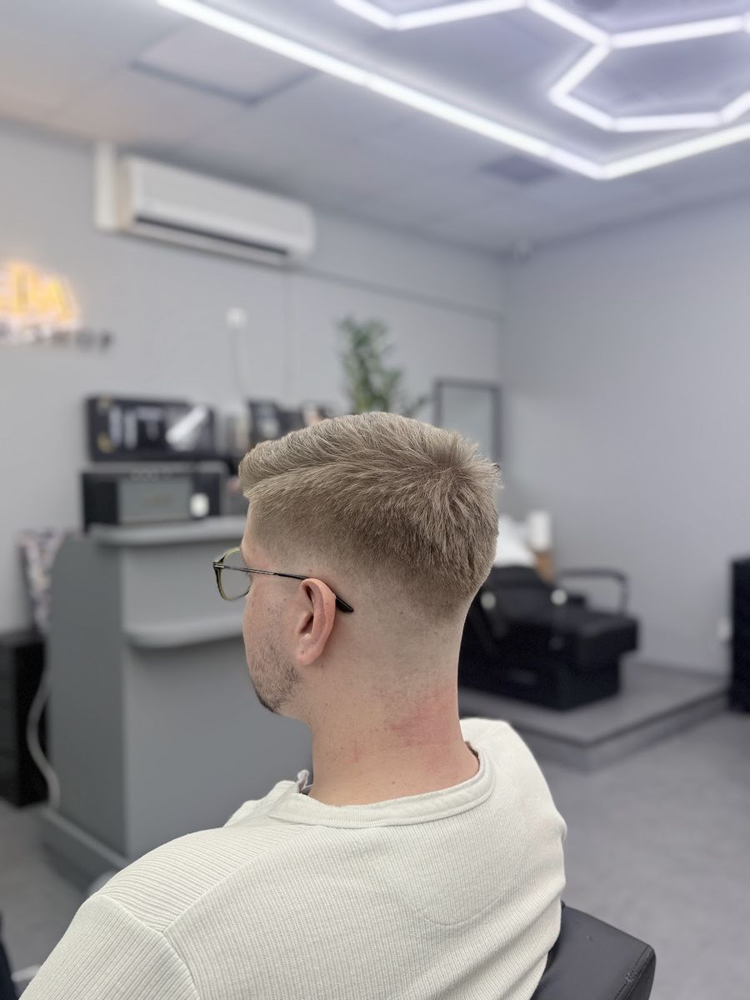

Bez objednání
Přijďte, kdy se vám to hodí. Sednete si a počkáte, až na vás přijde řada.
Střih trvá většinou 30 až 45 minut. Na stolku u křesel je PlayStation a miska bonbonů, pití máte zdarma.
Fade, buzzcut,
pánský i dětský střih.



Co píšou na Googlu
-
„Nový barbershop na Zahradním Městě. Vřele doporučuji. Po dlouhé době mě někdo ostříhal podle mých představ. Bez objednání. Milý personál.“
Jiří
-
„Stříhal mě David, pečlivá práce, má dobrý cit, hned pochopil, jaký účes mám na mysli.“
Dawe
-
„Syn 6 let dává 10/10, barber moc milý a profesionální. Super cut. Určitě se vrátíme.“
Kája
-
„Mega skvělá atmosféra. Při čekání na kamaráda jsem zkrátil čas u Playstationa. A střih byl přesně tak, jak jsem si řekl.“
Jan
Topolová 2915/16,
Praha 10
Jsme v OC Cíl na Zahradním Městě. Poznáte nás podle prosklené výlohy s kruhovým logem.
- Pondělí
- 9:00–19:30
- Úterý
- 9:00–19:30
- Středa
- 9:00–19:30
- Čtvrtek
- 9:00–19:30
- Pátek
- 9:00–19:30
- Sobota
- 10:00–19:30
- Neděle
- 10:00–19:30
Po–Pá 9:00–19:30, So–Ne 10:00–19:30